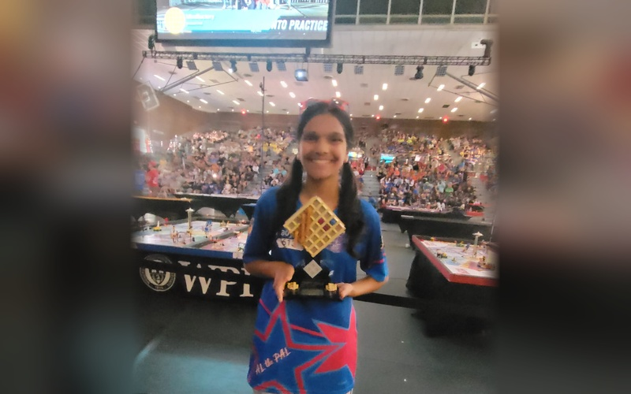

FIRST Robotics — FLL & FTC Championship Lead Coder
Lead autonomous programmer from FLL World Open to The Lawrenceville School FIRST Tech Challenge team — architecting quintic Bézier splines, 3-wheel odometry, and AprilTag vision.
Hands-on engineering, autonomous algorithmic control, environmental water remediation, and community healthtech — organized into six core disciplines.
Lead autonomous programmer from FLL World Open to The Lawrenceville School FIRST Tech Challenge team — architecting quintic Bézier splines, 3-wheel odometry, and AprilTag vision.

Designed, wired, and programmed an autonomous rover with ultrasonic arrays, IR proximity sensors, and PID wheel speed feedback for collision-free indoor mapping.

Represented New Jersey at Worcester Polytechnic Institute US Open, presenting engineering notebooks, algorithmic design rationales, and autonomous intake mechanisms to industry judges.

Bench tests and multi-stage filtration comparing waste-derived biochars (coconut shell and pine bark) for water remediation, with pH, filtration rates, and heavy metal adsorption.

A sensor-driven marine buoy concept designed to detect localized drops in seawater pH and autonomously dispense measured calcium carbonate to buffer ocean acidification.

Developed continuous IoT telemetry nodes measuring turbidity, dissolved oxygen, and oxidation-reduction potential with edge machine learning anomaly detection.

Investigating wavelength absorption differentials across varying epidermal melanin concentrations in PPG sensors to eliminate systemic bias in non-invasive biometric monitoring.

Explored multimodal clinical models combining waveform telemetry with patient electronic health records for early sepsis and arrhythmia anomaly detection.

Completed hands-on laboratory certifications in recombinant DNA cloning, PCR amplification, agarose gel electrophoresis, and spectrophotometric protein assays.

A low-cost, portable vitals monitoring station and companion cloud web app providing rapid SpO2, pulse rate, and temperature readings for underserved communities.

Deployed MoniVitals across local New Jersey farmers markets and senior outreach events, conducting over 100 free vital screenings for community elders and underserved families.

Engineered custom 3D printed housing, integrating MAX30102 optical sensor, MLX90614 infrared thermopile, OLED display, and rechargeable lithium-polymer power circuit.

Spearheaded grassroots community drives, packing over 3,500 lbs of shelf-stable food and mobilizing youth volunteers across Mercer County food pantries.

Weekly volunteer sessions at Artis Senior Living, conducting smartphone/tablet digital literacy workshops, classical music therapy recitals, and intergenerational storytelling.

Organized regional winter clothing and essential supply drives for unhoused families, receiving official commendation from the New Jersey State Assembly and State Senate.

Grand Prize winner at the Music-Fest International Rising Talent Festival; solo performances at Weill Recital Hall at Carnegie Hall and Manhattan School of Music.

Serving as 1st Chair Flutist in competitive school and regional wind ensembles, leading section rehearsals and performing challenging symphonic literature.

Commended in the international John Locke Institute Global Essay Prize; multiple published poems exploring environmental consciousness and identity.